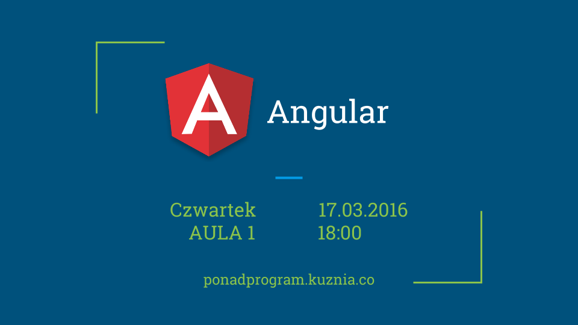

Angular praktycznie i niepraktycznie
18:00, 17.03.2016
Aula 1, Wydział MFI Uniwersytet Gdański
Wita Stwosza 57 Gdańsk
Zapraszamy na kolejne spotkanie z serii Ponad Program.
Przechodzimy do świata JavaScriptu.
Dwóch bohaterów z firmy PGS Software,
Piotr Pietrzak i Dariusz Tomaszewski opowie o Angularze.
Agenda
- Czym jest Angular i do czego jest on nam potrzebny
- Dobry, zły i brzydki, czyli kilka twarzy Angulara
- Przykład aplikacji, omówienie dobrych i złych praktyk
- Rzut oka na Angular 2
Wstęp wolny.